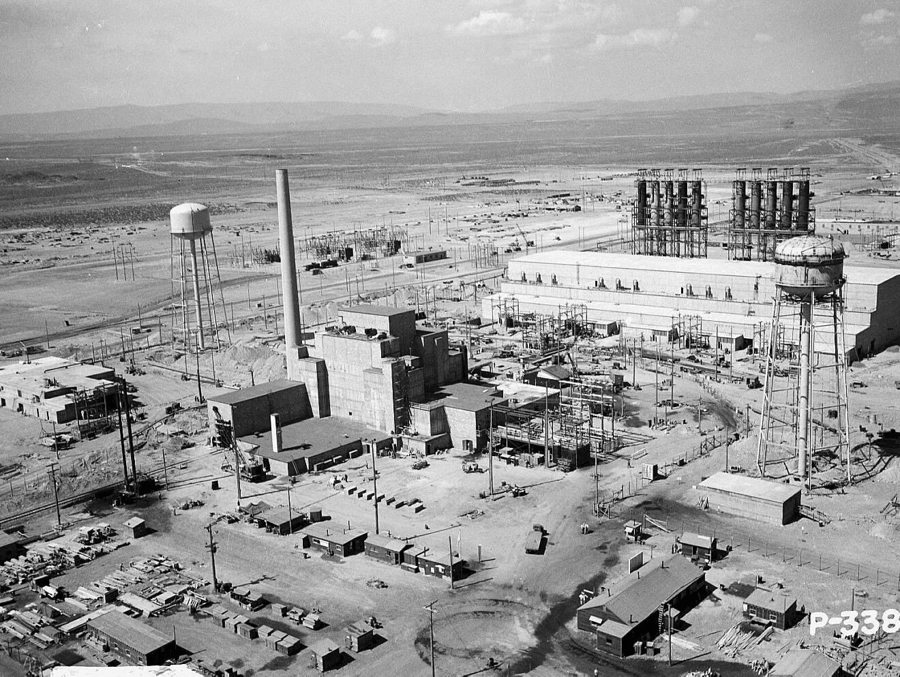
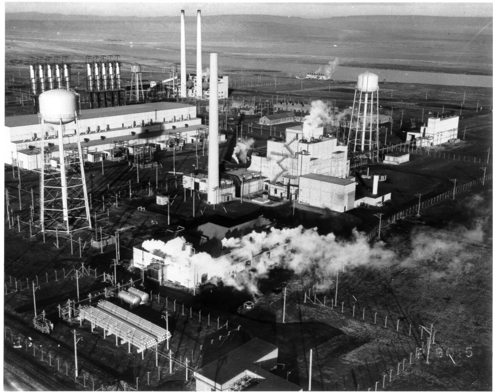
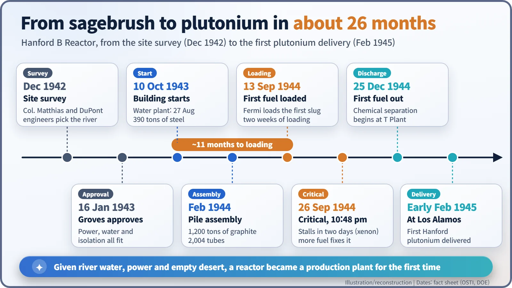
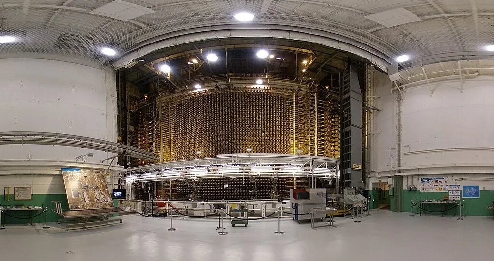

Nuclear History · 105
When a Lab Experiment Became a Factory — Hanford's B Reactor, the Plutonium Plant in the Desert
Less than two years after a 200-watt pile in Chicago, a 250-megawatt reactor in the Washington desert turned nuclear physics into an industrial process.
In the dry country beside the Columbia River, the Manhattan Project built the world's first full-scale plutonium production reactor. Designed for 250 megawatts, B Reactor went critical at 10:48 p.m. on 26 September 1944, and its plutonium reached Los Alamos in early February 1945. It marked the moment a reactor stopped being a physics experiment and became industrial plant.
Two hundred watts, two hundred and fifty million watts
The first number is the highest power reached by the world's first reactor, under the stands of a Chicago sports field in December 1942: about as much as a couple of household light bulbs. The second is the design power of a reactor built in the desert of the American Northwest less than two years later. That is a jump of roughly 1.25 million times. The Hanford B Reactor was the moment a reactor stopped being a physics experiment and became a piece of industrial plant. [2]

Kilograms, not specks
Plutonium had only been identified in 1941, and the amounts anyone had handled were barely visible. A bomb needed kilograms. Uranium-235 has to be sorted out of natural uranium, but plutonium can be made inside a reactor and then separated chemically, because it is a different element. The catch was scale: reactors of hundreds of megawatts, plus the water to cool them, the electricity to run the site, and land with very few people on it.
Why the desert of Washington State?
Between 18 and 31 December 1942, Lieutenant Colonel Franklin T. Matthias (1908–1993) of the Manhattan District and engineers from the chemical company DuPont toured candidate sites in the West. Matthias reported that Hanford, on the Columbia River, was "far more favorable in virtually all respects than any other." Three conditions decided it. A high-voltage line linking the Grand Coulee and Bonneville dams ran right through the site. The river could supply at least 25,000 gallons of cooling water a minute. And there was no town of more than 1,000 people within 20 miles of the hazardous area. [5]
General Leslie Groves inspected the site and approved it on 16 January 1943. The choice had a cost. About 1,500 residents of Hanford, White Bluffs and nearby settlements had to leave their land, and Native peoples who had long lived along this stretch of river, among them the Wanapum, were affected too. [5]
1,200 tons of graphite and 2,004 holes
Work began on the cooling-water plant on 27 August 1943, and on 10 October 1943 DuPont engineers drove the first stakes for the reactor building. The building alone took 390 tons of structural steel and 17,400 cubic yards (about 13,300 cubic metres) of concrete. On 21 June 1944 the construction workforce peaked at 45,096. [1] [5]
At the heart of it lay 1,200 tons of graphite, stacked into a block about 8.5 by 11 metres (28 by 36 feet). Graphite is a moderator: it slows down fast neutrons so that the fission chain reaction keeps going. Running horizontally through the block were 2,004 aluminium tubes, and inside them, end to end, sat slugs of natural uranium sealed in aluminium cans, about 200 tons in all. Water from the Columbia flowed through the tubes around the slugs at about 75,000 gallons a minute. Push fresh slugs in at the front face, and irradiated ones were pushed out of the back into a pool of water: rather like a giant, very carefully engineered vending machine. [2] [3]
![Diagram: a dark graphite block pierced by horizontal aluminium tubes holding orange fuel slugs; river cooling water enters at the top left and returns to the river; fresh slugs are pushed in at the front and irradiated slugs drop into a water pool at the rear; side cards show 250 MW design power, about 200 tons of uranium and 1,250,000 times CP-1's 200 W peak; a lower strip shows U-238 absorbing a neutron to become U-239, which decays (half-life about 23.5 minutes) to Np-239 and then (about 2.36 days) to Pu-239](../../assets/images/history/105-hanford-b-reactor/fig1-reactor-section.webp)
What happened inside the tubes went like this. A uranium-238 nucleus swallows a neutron and becomes uranium-239. With a half-life of about 23.5 minutes it decays into neptunium-239, which in turn, with a half-life of about 2.36 days, becomes plutonium-239. The reactor ran that chain on an industrial scale.
Fermi's first slug, and a stall after two days
On 13 September 1944, Enrico Fermi (1901–1954) loaded the first slug, and about two weeks of loading and measurements followed. At 10:48 p.m. on 26 September, B Reactor went critical. In the early hours of the next morning it ran at a higher power than any chain reaction before it. [1] [3]
Then the power began to sag on its own, and on the evening of 28 September the reactor stopped. The culprit was xenon, a fission product that soaks up neutrons. Fortunately DuPont had built in extra fuel tubes, so the team could load more fuel and overpower the problem. How the physicists tracked down that culprit is a detective story of its own. [1]
The first fuel out, on Christmas Day
On 25 December 1944 the first irradiated slugs came out of the reactor. After chemical separation at the T Plant, Hanford plutonium first reached Los Alamos in early February 1945; sources give the date as either 2 or 5 February. Plutonium from this reactor was used in the Trinity test on 16 July 1945 and in the bomb dropped on Nagasaki on 9 August 1945. [1] [3] [5]


After the stack fell quiet
After the war, B Reactor went on producing plutonium during the Cold War, and the Hanford riverbank eventually held nine production reactors. B Reactor was shut down for good in February 1968. It left a heavy legacy too. A 1992 US government report estimated releases of iodine-131 into the air and river between 1944 and 1947, and the clean-up of 177 high-level waste tanks, set out in a 1989 agreement between federal and state agencies, is still under way. [3] [4] [5]
The reactor building itself was once slated for demolition. After a long campaign by former workers, it was designated a National Historic Landmark on 19 August 2008 and became part of the Manhattan Project National Historical Park in 2015. It still asks a question worth asking: when laboratory physics becomes industry, what does it take, and what does it leave behind? [3] [4]
